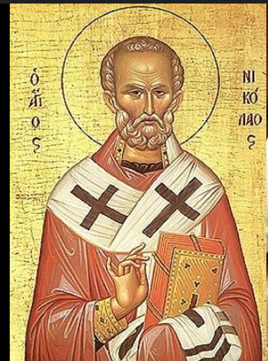
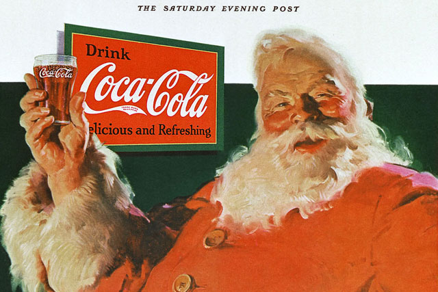

Well you're in the right place. Lots to learn here.
We'll need to head back to 4th Century BC to start.Saint Nicholas of Myra - a 4th Century Bishop is what is now Turkey. He was renowned for his generosity and care. One famous story tells of Nicholas secretly providing dowries for three impoverished sisters by tossing gold coins through their window, which landed in stockings hung to dry. |
 |
Next we're heading to Medieval Times.After his death, December 6th, which was his feast day, became widely celebrated across Europe. It was particularly celebrated in Germany. In the Netherlands, Sinterklaas became a thing. This was where a Bishop-like figure delivered gifts to children. He travelled by horse, and was accompanied by helpers (elves??). |
Off to America next (hope you are saving your flyer miles!)Over time, the Dutch settled in New York, and brought over the Sinterklaas tradition. Over time, the name evolved into "Santa Claus" In the 19th Century, Washington Irving's writing described Saint Nicholas as jolly, and flew over rooftops (which began the modern transformation). |
Several books, poems and ads later.In 1823, the poem "A visit from St. Nicholas" made the image of Santa being plump and cheerful popular, along with his reindeer. The Coca Cola Company showed advertisements that depicted Santa as jolly and red suited. Santa basically became Coca Cola's mascot at Christmas. |
 |
Ok. Ok. Back to present time now. Let's summarise.As you can see, over time, Santa has been widely regarded as plump, and many foreign influences have shaped him to what he is today, a big man delivering presents with his reindeer. Question is: do you believe in Santa? |